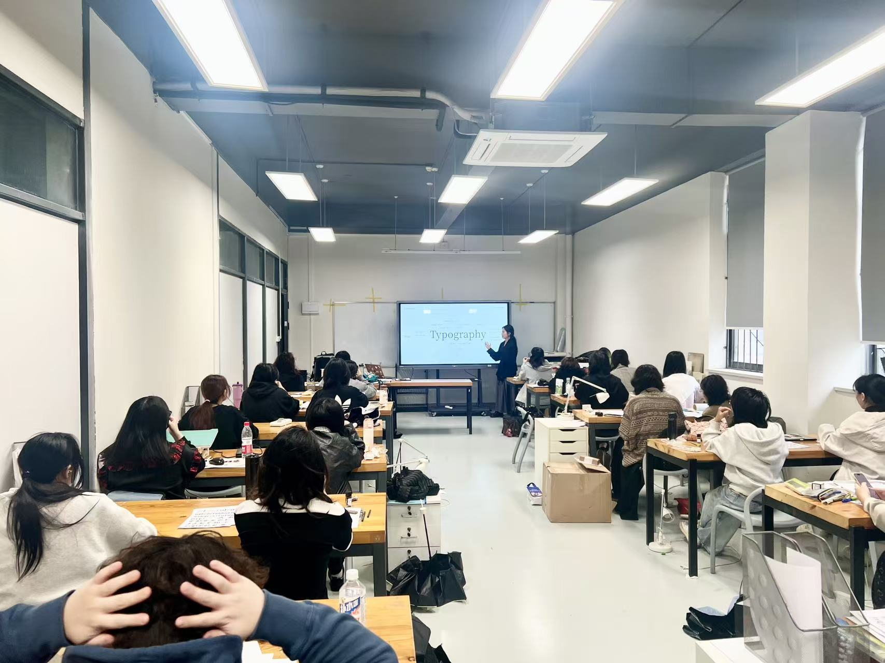
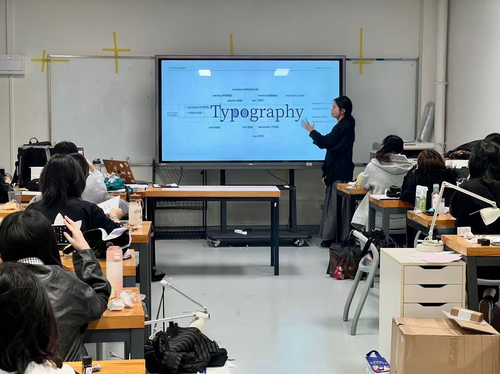
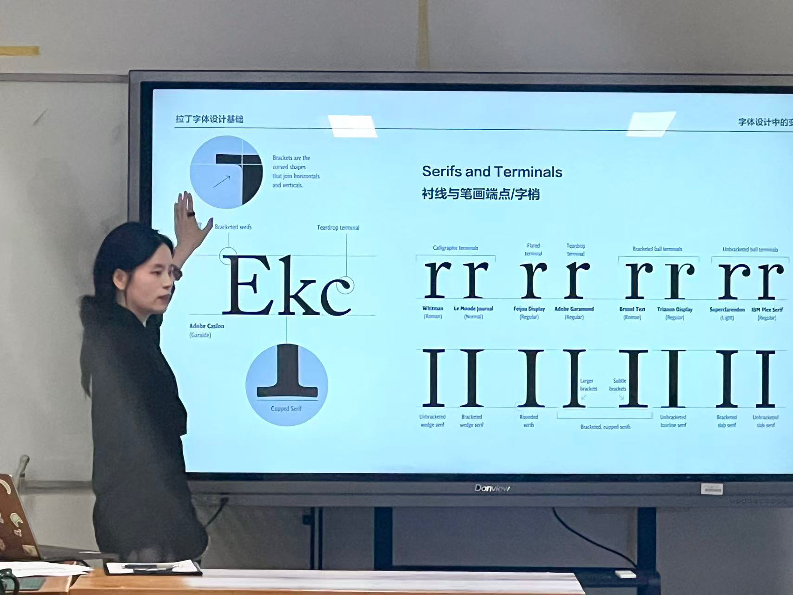

Course
Chinese-Latin Cross-script Design and Application
Course on multilingual typography, cross-script composition, and applied type design.




Course
Course on multilingual typography, cross-script composition, and applied type design.


